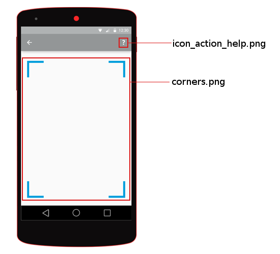
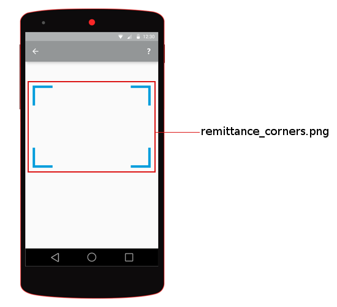
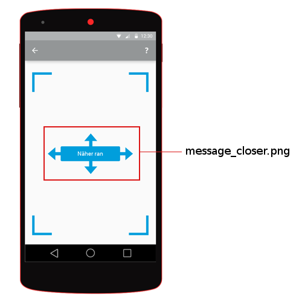
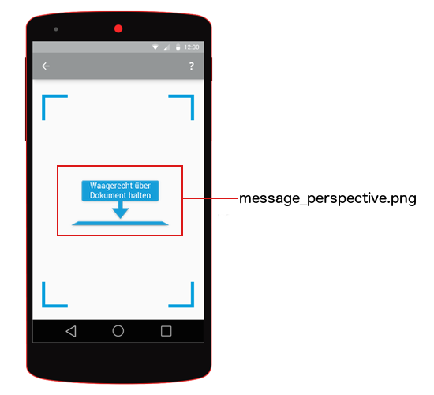
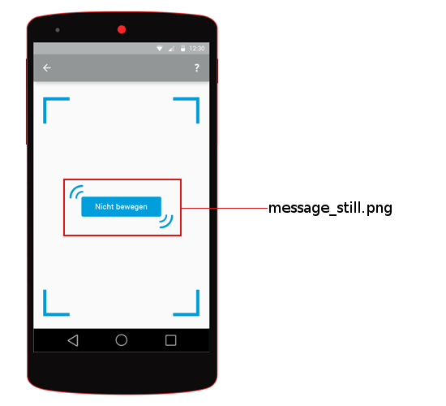
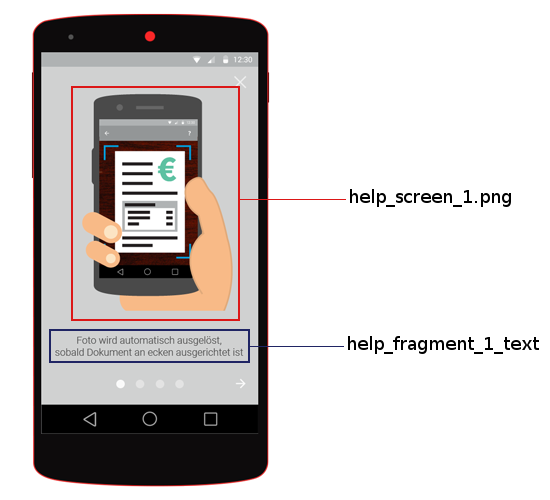
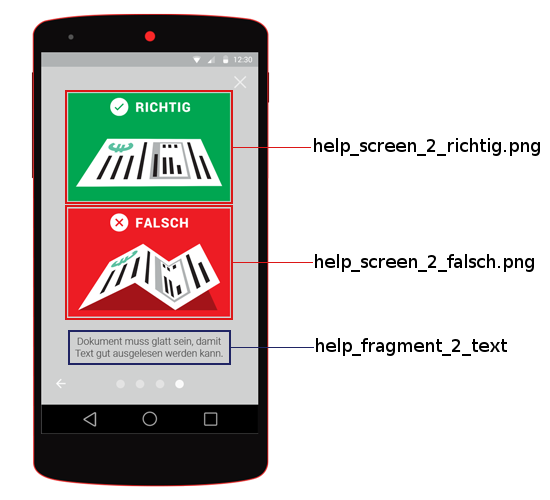
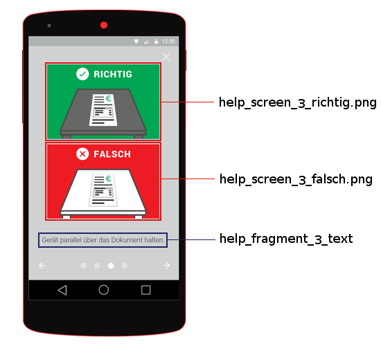
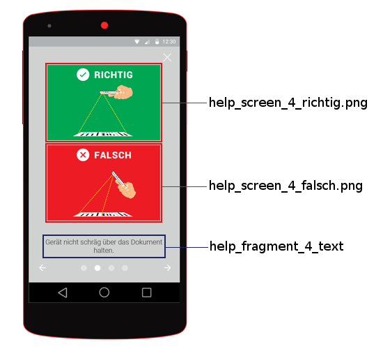
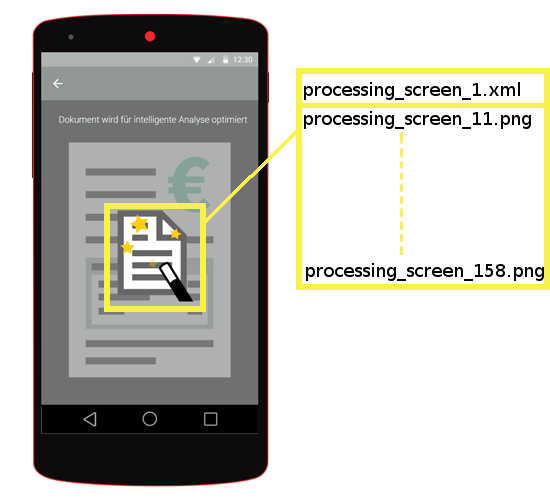

Gini Android Vision documentation¶
Introduction¶
Gini provides an information extraction system for analyzing documents (e. g. invoices or contracts), specifically information such as the document sender or the amount to pay in an invoice.
The Gini Vision for Android library provides functionality to capture documents with mobile phones. The captured images are automatically enhanced on the device and optimized so they provide both the best results when used with the Gini API and an optimized user experience.
Table of contents¶
Getting started¶
First of all: Integrate the Library¶
The gini vision is provided as a aar archive. You can integrate it in your gradle based project by adding it as dependency. In order to gain access to the aar file, you have to add the Gini Maven repository to your build script.
repositories {
maven {
credentials {
username project.hasProperty('giniRepoUser') ? giniRepoUser : 'invalidUser'
password project.hasProperty('giniRepoPassword') ? giniRepoPassword : 'invalidPassword'
}
url "https://repo.gini.net/nexus/content/repositories/releases"
}
...
}
dependencies {
compile ('net.gini:ginivision-android-sdk:1.0.190@aar'){
transitive = true
}
...
}
In the example above we inject the repo credentials via project properties which can be provided in several ways (See the gradle documentation). Please contact Technical Support if you don’t have the credentials for the Gini repo.
v7 Support Library¶
The default aar archive uses android.app.Activity as the base class for activities. If you use the v7 Support Library and require activities extending android.support.v7.app.AppCompatActivity you can use the compatibility build ginivision-android-sdk-compat.
dependencies {
compile ('net.gini:ginivision-android-sdk-compat:1.0.190@aar'){
transitive = true
}
...
}
Required Permissions and Features¶
The Gini Vision library for Android needs access to the device’s camera. Therefore your application needs to request permission to access the camera, which, in Android, is achieved by adding the following line to your application’s manifest file. See the Android documentation.
<uses-permission android:name="android.permission.CAMERA" />
The Gini Vision library for Android also depends on some hardware features which the device must support. It is best practice to declare these required features in the manifest file as well, as described in the Android documentation.
The following is the full listing of all required features which you should add to your application’s manifest file.
<uses-feature android:name="android.hardware.sensor.accelerometer" />
<uses-feature android:name="android.hardware.camera" />
<uses-feature android:name="android.hardware.camera.flash" />
<uses-feature android:name="android.hardware.camera.autofocus" />
Use a Large Heap¶
Unfortunately, image processing is a memory intensive task. Because of that, you must request a larger heap size by by setting the largeHeap attribute to “true” in the manifest <application> tag. Otherwise it is likely that your application will crash due to an OutOfMemoryException.
Example: A Complete Manifest File¶
Listed below is the example of a complete manifest file, declaring all required permissions and features.
<?xml version="1.0" encoding="utf-8"?>
<manifest xmlns:android="http://schemas.android.com/apk/res/android"
package="net.gini.android.visiontest" >
<uses-permission android:name="android.permission.CAMERA" />
<uses-feature android:name="android.hardware.camera" />
<uses-feature android:name="android.hardware.camera.autofocus" />
<uses-permission android:name="android.permission.WRITE_EXTERNAL_STORAGE" />
<uses-permission android:name="android.permission.INTERNET" />
<application
android:allowBackup="true"
android:icon="@drawable/ic_launcher"
android:label="@string/app_name"
android:largeHeap="true">
<activity
android:name=".StartActivity"
android:label="Gini Testing" >
<intent-filter>
<action android:name="android.intent.action.MAIN" />
<category android:name="android.intent.category.LAUNCHER" />
</intent-filter>
</activity>
</application>
</manifest>
Check whether the device supports all Gini Vision requirements¶
The Gini Vision library for Android provides a helper method that you can use in your application’s Activity to check whether the device supports all requirements:
import static net.gini.android.vision.Helpers.fitsGiniVisionRequirements;
// Somewhere in your activity
if (!fitsGiniVisionRequirements(this)) {
// Some action here (e.g. show a message, don't show some button etc.)
}
Warning
fitsGiniVisionRequirements() uses Camera.open() which may take a long time to complete on some devices. You should call this method from a worker thread to avoid blocking the main application UI thread.
Next: Use the Scanner Activity¶
After you have integrated the Gini Vision library for Android successfully and your application requests all the necessary permissions, you are good to go. Learn next How to Use the Scanner Activity to Scan Documents..
Using the Scanner Activity¶
The Scanner Activity (net.gini.vision.android.ScannerActivity) is the main feature of the Gini Vision library for Android. Basically your application starts this activity and gets the cropped and enhanced image when the activity returns with results.
Starting the Scanner Activity¶
The Intent which triggers the scanner activity must be parameterized. There are two mandatory parameters:
- ScannerActivity.EXTRA_UPLOAD_ACTIVITY
- The UploadActitvity must be set which is called after the document has been captured. This class must extend the net.gini.android.vision.UploadActivity and implement the uploadDocument(..) method. There is a static helper method ScannerActivity.setUploadActivityExtra in order to make setting the activity more convenient.
- ScannerActivity.EXTRA_HELP_ACTIVITY
- Set an Activity used for showing help messages to the user. You can also subclass the net.gini.android.vision.help.HelpActivity, if you want to customize the default help. There is a static helper method ScannerActivity.setHelpActivityExtra in order to make setting the activity more convenient.
- ScannerActivity.EXTRA_DOCTYPE_BUNDLE
- The desired document type must be selected by the user and must be provided as net.gini.android.vision.DocumentType instance. Furthermore, the document type parameter must be wrapped in a bundle using the key ScannerActivity.EXTRA_DOCTYPE
You can also put two optional extras in the intent. Both expect a boolean value.
- ScannerActivity.EXTRA_SHOW_HELP
- Whether the ScannerActivity should show the HelpActivity the first time it is launched during an application run.
- ScannerActivity.EXTRA_STORE_ORIGINAL
- Whether the ScannerActivity should store and return the original image. Please note that all images are held in the device’s memory, not in the storage. Because of that, you should use this feature only for tests or debugging since it increases memory usage significantly.
Example¶
The following example starts the ScannerActivity and the ScannerActivity will return both the original image and the enhanced image. The MyUploadActivity and the optional MyHelpActivity are classes implemented by your app.
final Intent scanIntent = new Intent(this, ScannerActivity.class);
scanIntent.putExtra(ScannerActivity.EXTRA_STORE_ORIGINAL, true);
scanIntent.putExtra(ScannerActivity.EXTRA_STORE_RECTIFIED, true);
final DocumentType documentType = // user has selected the document type already
final Bundle docTypeBundle = new Bundle();
docTypeBundle.putParcelable(ScannerActivity.EXTRA_DOCTYPE, documentType);
scanIntent.putExtra(ScannerActivity.EXTRA_DOCTYPE_BUNDLE, docTypeBundle);
ScannerActivity.setUploadActivityExtra(scanIntent, this, MyUploadActivity.class);
// Optional: if you have a custom MyHelpActivity
ScannerActivity.setHelpActivityExtra(scanIntent, this, MyHelpActivity.class);
startActivityForResult(scanIntent, IMAGE_REQUEST);
Note
Always start the activity with the startActivityForResult() method and not with the startActivity() method. Otherwise you won’t be able to obtain the captured documents.
Getting the Results of the Scanner¶
The ScannerActivity finishes automatically once the user has captured an image successfully. Afterwards, the Android system calls your activity’s onActivityResult method. responseCode and the Intent data will be the values that your derived UploadActivity set.
If taking the picture was not successful due to some user interaction (e.g. the application user pressed the back button), responseCode will be Activity.RESULT_CANCELED.
If some error happened during the picture taking, responseCode will be ScannerActivity.RESULT_ERROR. The result intent has an extra ScannerActivity.EXTRA_ERROR that contains an error enumeration. See the example for details on how to extract the error enumeration. The following errors are possible:
- LOW_MEMORY
- There was not enough memory available to process the photo.
- NO_CAMERA
- The Gini Vision library was unable to connect to the camera service.
BitmapFuture¶
The ScannerActivity uses BitmapFuture (net.gini.android.vision.BitmapFuture) instances to pass bitmaps between activities. The BitmapFuture implements the conventional Future interface. You can always use the get() method on a BitmapFuture directly; it does return immediately and returns a Bitmap. Unfortunately, it is not possible to pass the result images directly in the result intent since Android has some hard limitations on the size of transactions.
There are two extras in the result intent which is given to the method; both are BitmapFuture instances:
- ScannerActivity.EXTRA_DOCUMENT
- A BitmapFuture that will get the rectified image of the document.
- ScannerActivity.EXTRA_ORIGINAL
- A BitmapFuture that will get the original image without any enhancements. Only available when the activity was started with the ScannerActivity.EXTRA_STORE_ORIGINAL extra.
Warning
It is important that your application always extracts the BitmapFuture instances out of the result intent. Otherwise, memory leaks are possible.
Example¶
@Override
public void onActivityResult(int requestCode, int resultCode, Intent data) {
Bundle documentBundle;
BitmapFuture originalFuture = null;
BitmapFuture rectifiedFuture = null;
// we always try to get the document to prevent memory leaks
if (requestCode == IMAGE_REQUEST && data != null) {
documentBundle = data.getBundleExtra(ScannerActivity.EXTRA_DOCUMENT_BUNDLE);
if (documentBundle != null) {
originalFuture = documentBundle.getParcelable(ScannerActivity.EXTRA_ORIGINAL);
rectifiedFuture = documentBundle.getParcelable(CaptureActivity.EXTRA_DOCUMENT);
}
}
if (requestCode == IMAGE_REQUEST && resultCode == RESULT_OK) {
// everything ok, do something with the document
} else if (requestCode == IMAGE_REQUEST && resultCode == ScannerActivity.RESULT_ERROR) {
final ScannerActivity.Error error = data.getParcelableExtra(ScannerActivity.EXTRA_ERROR);
// unfortunately there was an error we must handle
}
}
Upload the Document to Gini using the Gini API SDK¶
First of all, we have to include the Gini API SDK as dependency in the build.gradle.
dependencies {
...
compile ('net.gini:gini-android-sdk:1.1.44@aar'){
transitive = true
}
...
The Gini SDK provides a Gini class which acts as a facade to the whole functionality of the Gini API. Your app must create a single instance of this class and hold it for its complete life cyle.
Finally, the Gini instance is used in the uploadDocument(..) method of the MyUploadActivity which extends net.gini.android.vision.UploadActivity to upload the captured document. The example below shows a possible implementation which puts the result extractions into a new intent for further processing.
public void uploadDocument(final Bitmap document) {
final Intent intent = getIntent();
final Bundle documentTypeBundle = intent.getBundleExtra(EXTRA_DOCTYPE_BUNDLE);
final DocumentType documentType = documentTypeBundle.getParcelable(EXTRA_DOCTYPE);
documentTaskManager.createDocument(document, null, documentType.getApiDocTypeHint(), 50)
.onSuccessTask(new Continuation<Document, Task<Document>>() {
@Override
public Task<Document> then(Task<Document> task) throws Exception {
final Document document = task.getResult();
documentId = document.getId();
return documentTaskManager.pollDocument(document);
}
})
.onSuccessTask(new Continuation<Document, Task<Map<String, SpecificExtraction>>>() {
@Override
public Task<Map<String, SpecificExtraction>> then(Task<Document> task) throws Exception {
return documentTaskManager.getExtractions(task.getResult());
}
})
.onSuccess(new Continuation<Map<String, SpecificExtraction>, Object>() {
@Override
public Object then(Task<Map<String, SpecificExtraction>> task) throws Exception {
final Map<String, SpecificExtraction> extractions = task.getResult();
final Bundle extractionsBundle = new Bundle();
for (Map.Entry<String, SpecificExtraction> entry : extractions.entrySet()) {
extractionsBundle.putParcelable(entry.getKey(), entry.getValue());
}
final Intent result = new Intent();
result.putExtra(EXTRA_DOCUMENT, documentId);
result.putExtra(EXTRA_EXTRACTIONS, extractionsBundle);
setResult(RESULT_OK, result);
return null;
}
})
.continueWith(new Continuation<Object, Object>() {
@Override
public Object then(Task<Object> task) throws Exception {
if (task.isFaulted()) {
//noinspection ThrowableResultOfMethodCallIgnored
final Exception exception = task.getError();
// We could inspect the exception here -- should always be a subclass of a
// com.android.volley.VolleyError. For example:
// * AuthFailureError: Client credentials or access token was wrong
// * ConnectError, TimeoutError: can be caused by a flaky connection
// * NoConnectionError: (Likely) no Internet connection available
LOG.debug("Upload failed:", exception);
// Signal to parent activity that the uploading failed
final Intent resultIntent = new Intent();
resultIntent.putExtra(EXTRA_ERROR_STRING, exception.toString());
setResult(RESULT_UPLOAD_ERROR, resultIntent);
}
LOG.debug("done");
runOnUiThread(new Runnable() {
@Override
public void run() {
finish();
}
});
return null;
}
});
}
Full Example¶
Below is a full example of an activity which displays a button. When the user clicks on the button, the activity starts the document scanner. Once the user has successfully scanned a document, the ScannerActivity returns and the example activity can use the rectified bitmap of the document.
package net.gini.android.visiontest;
import android.app.Activity;
import android.content.Intent;
import android.graphics.Bitmap;
import android.os.Bundle;
import net.gini.android.vision.BitmapFuture;
import net.gini.android.vision.ScannerActivity;
public class ExampleActivity extends Activity {
protected static final int IMAGE_REQUEST = 1;
@Override
protected void onCreate(Bundle savedInstanceState) {
super.onCreate(savedInstanceState);
setContentView(R.layout.activity_example);
}
@Override
public void onActivityResult(int requestCode, int resultCode, Intent data) {
Bundle documentBundle;
BitmapFuture originalFuture = null;
// we always try to get the document to prevent memory leaks
if (requestCode == IMAGE_REQUEST && data != null) {
documentBundle = data.getBundleExtra(ScannerActivity.EXTRA_DOCUMENT_BUNDLE);
if (documentBundle != null) {
originalFuture = documentBundle.getParcelable(ScannerActivity.EXTRA_ORIGINAL);
}
}
if (requestCode == IMAGE_REQUEST && resultCode == RESULT_OK) {
// everything ok, do something with the document
} else if (requestCode == IMAGE_REQUEST && resultCode == ScannerActivity.RESULT_ERROR) {
final ScannerActivityDelegate.Error error = data.getParcelableExtra(ScannerActivity.EXTRA_ERROR);
// unfortunately there was an error we must handle
}
}
/**
* Callback which is called when the user clicked on a button. Starts the document scanner.
*/
public void onClick(View view) {
Intent scanIntent = new Intent(this, ScannerActivity.class);
scanIntent.putExtra(ScannerActivity.EXTRA_STORE_RECTIFIED, true);
// MyUploadActivity is your Activity that implements the upload or processing logic.
// It needs to be derived from Gini Vision library's UploadActivity.
ScannerActivity.setUploadActivityExtra(scanIntent, this, MyUploadActivity.class);
// Optional: if you have a custom MyHelpActivity
ScannerActivity.setUploadActivityExtra(scanIntent, this, MyHelpActivity.class);
startActivityForResult(scanIntent, IMAGE_REQUEST);
}
}
See also
The Android documentation on Getting a result from an activity.
Styling the Image Capturing Screens¶
The Gini Android Vision library is built with the option to adopt the styling appropriate to the requirements of your CI. Therefore the UI ressources used by the Gini Android Vision library can be replaced or customized.
Screen Resources¶
You can replace the images used by the SDK simply by adding images with the same name to the drawables folder (and resolution dependent subfolders) of your app. The text to be displayed can be replaced by adding string resources with the same keys in the values/strings.xml file of your app. The following screen images will show which image and which text ressources are used on which screen. The color scheme is as follows: red- images, yellow- animations blue- texts.
Camera Screen¶
    Help Screen #1¶
Help Screen #2¶
Help Screen #3¶
Help Screen #4¶
Processing Screen¶
The processing screen contains an animation which is defined in drawables/processing_screen_1.xml.
List of all image files¶
- corners.png
- help_screen_1.png
- help_screen_2_falsch.png
- help_screen_2_richtig.png
- help_screen_3_falsch.png
- help_screen_3_richtig.png
- help_screen_4_falsch.png
- help_screen_4_richtig.png
- icon_action_help.png
- message_closer.png
- message_perspective.png
- message_still.png
- processing_screen_11.png
- remittance_corners.png
List of all animations¶
- processing_screen_1.xml
List of all text ressources¶
- title_activity_scanner
- title_activity_scanner_invoice
- title_activity_scanner_remittance
- title_activity_scanner_integrated_remittance
- action_settings
- net.gini.android.vision.title_activity_choice
- action_help
- title_activity_help
- action_back
- action_forward
- action_help_close
- help_fragment_title
- help_fragment_1_text
- help_fragment_2_text
- help_fragment_3_text
- help_fragment_4_text
Customizable colors¶
- net.gini.android.vision.theme.actionBar.background
- The background color of the action bar when the ScannerActivity is displayed.
- net.gini.android.vision.theme.actionBar.color
- The color of the text on the the action bar when the ScannerActivity is displayed.
- net.gini.android.vision.theme.statusBar
The color of the status bar when the ScannerActivity is displayed.
Note
Please note that this option is ignored in Android versions lower than 5.0 (Lollipop).
- net.gini.android.vision.theme.outlineColor
- The color of the document outline shown in the ScannerActivity‘s viewfinder.
- net.gini.android.vision.theme.backgroundColor
- The background color for the root views of all activities except the Help Activity.
- net.gini.android.vision.theme.helpBackgroundColor
- The background color for the HelpActivity‘s root view.
Listed below is an example file which would go into the application’s res/styles/style.xml` file.
<?xml version="1.0" encoding="utf-8"?>
<resources>
<color name="net.gini.android.vision.theme.actionBar.background">#009edc</color>
<color name="net.gini.android.vision.theme.actionBar.color">#ffffff</color>
<color name="net.gini.android.vision.theme.statusBar">#007eb0</color>
<color name="net.gini.android.vision.theme.outlineColor">#1ae2ae</color>
<color name="net.gini.android.vision.theme.backgroundColor">#ffffff</color>
<color name="net.gini.android.vision.theme.helpBackgroundColor">#ffffff</color>
</resources>
Customizable fonts¶
You can change the fonts used in several places. System and custom fonts are supported. To use a custom font place the font file in the assets/fonts directory of your project.
The following <string> resources set the fonts:
- net.gini.android.vision.theme.helpTextFont
- Sets the font used for the help texts. The system font name as used in android:fontFamily attributes or the custom font file name including extension.
- net.gini.android.vision.theme.captureHeadingFont
- Sets the font used for the heading in the CaptureActivity. The system font name as used in android:fontFamily attributes or the custom font file name including extension.
- net.gini.android.vision.theme.actionBarFont
- Sets the font used in the ActionBars. The system font name as used in android:fontFamily attributes or the custom font file name including extension.
This can be put into the same res/styles/style.xml file used for customizing the colors.
Below is an example with a system font:
<string name="net.gini.android.vision.theme.helpTextFont">sans-serif-light</string>
The following example shows how to use a custom font, called Cave-Story.ttf which was placed into the assets/fonts directory:
<string name="net.gini.android.vision.theme.helpTextFont">Cave-Story.ttf</string>
ActionBar back button¶
The ActionBar Home button can be set to act as a back button (similar to iOS). To enable it set the net.gini.android.vision.home_as_back_button boolean resource to true and create a drawable named back_button (image or XML).
In addition, if you use the standard version, you must set the back_button drawable in your styles.xml as the homeAsUpIndicator.
<style name="net.example.theme" parent="@android:style/Theme.Holo.Light">
<item name="android:homeAsUpIndicator">@drawable/back_button</item>
</style>
It is also advisable to remove the home icon from the ActionBar by setting the displayOptions for the ActionBar’s style to disableHome.
An example style configuring the homeAsUpIndicator and the displayOptions:
<style name="net.example.theme" parent="@android:style/Theme.Holo.Light">
<item name="android:actionBarStyle">@style/net.example.theme.ActionBar</item>
<item name="android:homeAsUpIndicator">@drawable/back_button</item> <!-- Not needed for compat -->
</style>
<style name="net.example.theme.ActionBar" parent="@android:style/Widget.Holo.Light.ActionBar">
<item name="android:displayOptions">disableHome</item>
</style>
Enable the back button:
<bool name="net.gini.android.vision.home_as_back_button">true</bool>
Example back_button.xml drawable which displays a png called back_icon moved 20dp to the left:
<layer-list xmlns:android="http://schemas.android.com/apk/res/android">
<item android:left="-20dp">
<bitmap android:src="@drawable/back_icon"
android:gravity="center" />
</item>
</layer-list>
Centering the ActionBar title¶
By setting the net.gini.android.vision.center_activity_title boolean resource to true the titles in the ActionBars will be centered. A custom view is used to accomplish this with a layout named action_bar_center_title.xml. You can create your own layout if you need to fine tune the positioning of the title. The only requirement is that it contains a TextView with the id title_centered.
Enable the title centering:
<bool name="net.gini.android.vision.center_activity_title">true</bool>
Custom action_bar_center_title.xml layout that moves the title 24dp to the left:
<RelativeLayout xmlns:android="http://schemas.android.com/apk/res/android"
android:layout_width="match_parent"
android:layout_height="match_parent"
android:orientation="vertical"
android:clipChildren="false">
<TextView
android:paddingLeft="-24dp"
android:id="@+id/title_centered"
android:layout_width="wrap_content"
android:layout_height="wrap_content"
android:layout_centerInParent="true"
android:textColor="@color/net.gini.android.vision.theme.actionBar.color"/> <!-- Using the color from the theme -->
</RelativeLayout>
Dot page indicator in the help¶
By setting the net.gini.android.vision.help_dot_page_indicator boolean resource to true the dot page indicator can be enabled which replaces the text page indicators.
You can configure the bottom margin, the padding between the dots and the width/height of the dots with the following dimension resources:
<dimen name="net.gini.android.vision.theme.help_page_indicators_bottom_margin">15dp</dimen>
<dimen name="net.gini.android.vision.theme.help_page_indicator_padding">8dp</dimen>
<dimen name="net.gini.android.vision.theme.help_page_indicator_width">6dp</dimen>
<dimen name="net.gini.android.vision.theme.help_page_indicator_height">6dp</dimen>
The default and active dot colors can be configured with the following color resources:
<color name="net.gini.android.vision.theme.help_page_indicator_color_default">#999999</color>
<color name="net.gini.android.vision.theme.help_page_indicator_color_active">#000000</color>
Customizable Dimensions¶
- action_bar_title_size
- Size of the action bar’s title. Used only if a custom font is also set for the action bar’s title.
- document_outline_width
- Width of the document outline in the ScannerActivity’s camera viewfinder.
- help_text_size
- Size of the help text font.
- help_pager_title_strip_font_size
- Size of the title strip text in the HelpActivity.
- capture_heading_text_size
- Size of the heading text in the CaptureActivity.
Listed below is an example file which would go into the application’s res/values/dimens.xml` file.
<dimen name="help_text_size">20sp</dimen>
<dimen name="help_pager_title_strip_font_size">16sp</dimen>
<dimen name="capture_heading_text_size">22sp</dimen>
<dimen name="action_bar_title_size">18sp</dimen>
<dimen name="document_outline_width">2dp</dimen>
Debug Options¶
Enabling the framemeter¶
The framemeter is displayed on the upper right corner of the scanner activity and displays how long it takes to process one camera frame. The lower the number, the faster Gini can process images on the device. Which basically means that lower numbers are better.
<integer name="net.gini.android.vision.show_processing_average">0</integer>
The value is an integer describing the framemeter’s visibility as described in the android documentation. Usually you will use 0 while debugging or testing and 2 in release builds.
Logging¶
The logging facility of the Gini Vision library for Android is based on SLF4j. The Simple Logging Facade for Java (SLF4J) serves as a simple facade or abstraction for various logging frameworks (e.g. java.util.logging, logback, log4j) allowing the end user to plug in the desired logging framework at deployment time. This gives the App Developer the freedom of choice. If no SLF4J binding is found on the classpath, then SLF4J will default to a no-operation implementation.
The Gini Vision Library uses logging for debugging and error reporting at the moment.
Configuration¶
In order to use logging you have to add a SLF4J binding to the classpath of your app. If you wan’t to use logback for instance the logback dependencies must be present in the dependencies configuration of your build.gradle file.
dependencies{
...
compile 'com.github.tony19:logback-android-core:1.1.1-3'
compile 'com.github.tony19:logback-android-classic:1.1.1-3'
compile 'org.slf4j:slf4j-api:1.7.6'
...
}
Furthermore, logback itself must be configured. This can be done either via a groovy script (logback.groovy, a xml file (logback.xml) or directly in the application code. Here is a short example for configuring logback to append to the logcat logging facility.
final LoggerContext lc = (LoggerContext) LoggerFactory.getILoggerFactory();
lc.reset();
// setup LogcatAppender
final PatternLayoutEncoder layoutEncoder = new PatternLayoutEncoder();
layoutEncoder.setContext(lc);
layoutEncoder.setPattern("[%thread] %msg%n");
layoutEncoder.start();
final LogcatAppender logcatAppender = new LogcatAppender();
logcatAppender.setContext(lc);
logcatAppender.setEncoder(layoutEncoder);
logcatAppender.start();
final ch.qos.logback.classic.Logger root = (ch.qos.logback.classic.Logger) LoggerFactory.getLogger(Logger.ROOT_LOGGER_NAME);
root.addAppender(logcatAppender);
Changelog¶
1.0.190 (2015-11-13)¶
Bugfixes¶
- Scanner dynamic titles used only if set. No need to set all the scanner titles, if a static custom title is required.
- Missing doctype extra crash fixed. If no doctype extra, invoice doctype is assumed.
- Device without a linear acceleration sensor or an accelerometer will be able to take photos, too
1.0.182 (2015-10-15)¶
Features¶
- Back button can be enabled in the ActionBar.
- Title can be centered in the ActionBar.
- Dot page indicator can be enabled for the help screens.
1.0.170 (2015-09-23)¶
Features¶
- Changelog is public in the documentation.
Bugfixes¶
- Memory check reliability improved.
- Images in the help screens dynamically scaled to fit the screen.
- Fixed a camera related crash when quickly opening/closing the ScannerActivity.
- UploadActivity label is optional again.
1.0.162 (2015-09-11)¶
Features¶
- Camera viewfinder is centered.
- ActionBar title font and size customizable.
- Dynamic ScannerActivity title based on the provided DocumentType.
- UploadActivity start/stop animation methods can be overridden.
- Document outline width customizable.
- CaptureActivity heading font and size customizable.
- HelpActivity pager title strip text size customizable.
1.0.158 (2015-09-09)¶
Bugfixes¶
- Camera is closed independently of the scannerlib image processing and therefore is closed quicker after exiting the ScannerActivity
- Upload activity is not started when the back button is pressed at the right time after a picture was taken.
1.0.156 (2015-08-28)¶
Features¶
- Perspective message, if the phone is held at a too high angle relative to the document
- Stricter border tolerance (document edges must be nearer to the camera view finder edges)
Bugfix¶
- Continuous focus mode removed, caused unexpected behaviours
1.0.153 (2015-08-21)¶
Features¶
- Custom activity can be set for the help, can also be a HelpActivity subclass.
1.0.147 (2015-08-18)¶
Features¶
- Continuous auto-focus with an auto-focus cycle before taking a picture, if not in focus.
- v7 Support Library can be used when using the compatRelease/compatDebug library configuration.
Bugfix¶
- Flash is not started when the onboarding is shown on launch in the ScannerActivity.
1.0.139 (2015-08-17)¶
Features¶
- Help text font can be customized to use a system font or a custom font.
1.0.137 (2015-08-12)¶
Bugfix¶
- Memory leak related to the upload animation which happened on some devices (Samsung, Sony) fixed.
1.0.135 (2015-08-07)¶
Features¶
- Customizable background colors for the activities.
Bugfixes¶
- Accelerometer handling sensitivity was too high, reverted it to version 1.0.131 sensitivity.
License¶
The Gini Android Vision Library is licensed under a Private License and also integrates several third party libraries. Always make sure to ship all license notices and permissions with your application:
Copyright (c) 2014-2015, Gini GmbH
All rights reserved.
The Gini Vision Library is licensed through Gini GmbH ("Gini") and may not be
used, altered or copied in any way without explicit permission by Gini. The
terms of usage are defined in a separate usage agreement between Gini and the
licensee, where the licensee can gain access to a non-exclusive,
non-transferable usage right which is restricted for the time of a contractual
relationship between Gini and the licensee.
Licenses and Acknowledgements for Incorporated Software¶
This library makes use of the following third party libraries:
OpenCV¶
License Agreement
For Open Source Computer Vision Library
(3-clause BSD License)
Copyright (C) 2000-2015, Intel Corporation, all rights reserved.
Copyright (C) 2009-2011, Willow Garage Inc., all rights reserved.
Copyright (C) 2009-2015, NVIDIA Corporation, all rights reserved.
Copyright (C) 2010-2013, Advanced Micro Devices, Inc., all rights reserved.
Copyright (C) 2015, OpenCV Foundation, all rights reserved.
Copyright (C) 2015, Itseez Inc., all rights reserved.
Third party copyrights are property of their respective owners.
Redistribution and use in source and binary forms, with or without modification,
are permitted provided that the following conditions are met:
* Redistributions of source code must retain the above copyright notice,
this list of conditions and the following disclaimer.
* Redistributions in binary form must reproduce the above copyright notice,
this list of conditions and the following disclaimer in the documentation
and/or other materials provided with the distribution.
* Neither the names of the copyright holders nor the names of the contributors
may be used to endorse or promote products derived from this software
without specific prior written permission.
This software is provided by the copyright holders and contributors "as is" and
any express or implied warranties, including, but not limited to, the implied
warranties of merchantability and fitness for a particular purpose are disclaimed.
In no event shall copyright holders or contributors be liable for any direct,
indirect, incidental, special, exemplary, or consequential damages
(including, but not limited to, procurement of substitute goods or services;
loss of use, data, or profits; or business interruption) however caused
and on any theory of liability, whether in contract, strict liability,
or tort (including negligence or otherwise) arising in any way out of
the use of this software, even if advised of the possibility of such damage.
SLF4J¶
Copyright (c) 2004-2014 QOS.ch
All rights reserved.
Permission is hereby granted, free of charge, to any person obtaining
a copy of this software and associated documentation files (the
"Software"), to deal in the Software without restriction, including
without limitation the rights to use, copy, modify, merge, publish,
distribute, sublicense, and/or sell copies of the Software, and to
permit persons to whom the Software is furnished to do so, subject to
the following conditions:
The above copyright notice and this permission notice shall be
included in all copies or substantial portions of the Software.
THE SOFTWARE IS PROVIDED "AS IS", WITHOUT WARRANTY OF ANY KIND,
EXPRESS OR IMPLIED, INCLUDING BUT NOT LIMITED TO THE WARRANTIES OF
MERCHANTABILITY, FITNESS FOR A PARTICULAR PURPOSE AND
NONINFRINGEMENT. IN NO EVENT SHALL THE AUTHORS OR COPYRIGHT HOLDERS BE
LIABLE FOR ANY CLAIM, DAMAGES OR OTHER LIABILITY, WHETHER IN AN ACTION
OF CONTRACT, TORT OR OTHERWISE, ARISING FROM, OUT OF OR IN CONNECTION
WITH THE SOFTWARE OR THE USE OR OTHER DEALINGS IN THE SOFTWARE.